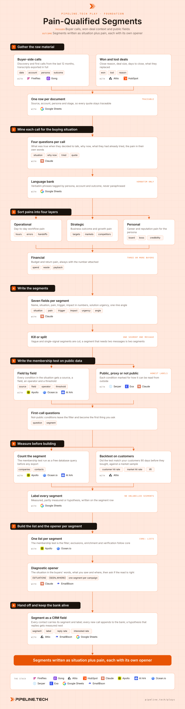

Play 04 · Foundation
Pain-Qualified Segments
Give this to your agent
Install the Pipeline.tech "Pain-Qualified Segments" outbound play. Fetch https://raw.githubusercontent.com/pipeline-tech/plays/main/core/SKILL.md and https://raw.githubusercontent.com/pipeline-tech/plays/main/plays/pain-qualified-segments/SKILL.md, save them as ~/.claude/skills/pipeline-outbound-core/SKILL.md and ~/.claude/skills/pipeline-pain-qualified-segments/SKILL.md, then run /pipeline-pain-qualified-segments.
Paste into Claude Code. It installs the shared core rules plus this play, then runs it as /pipeline-pain-qualified-segments.

Workflow, generated from the skillOpen full size
An ICP tells you which companies to contact, not why any of them would answer. A Pain-Qualified Segment (PQS), the Pipeline.tech framework for this, is a group of personas who share one specific pain your offer fixes, described in the words buyers used on calls. It is the bridge between ICP research and copy, and it decides what each campaign opens on.
Load pipeline-outbound-core first. Where a step says "apply core", follow that section of the core skill.
Inputs
Ask for these before step 1, and save them to ./pipeline-plays.config.json:
- The ICP in one paragraph, or the ICP file if one exists. This play names why those companies buy.
- Buyer-side call transcripts from the last 12 months: discovery calls, first calls, demos where the buyer did most of the talking. Under 15 calls, every segment carries the hypothesis label until more come in.
- Won and lost deals from the CRM with close reason, plus support tickets if they exist.
- Stack answers from core section 1.
- The offer in one sentence. A pain the offer does not fix is never a segment.
Steps
1Gather the raw material
ToolsFireflies (option)Gong (option)AttioHubSpotGoogle Sheets
- Pull every buyer-side transcript from the last 12 months. Internal calls and vendor-led demos carry little; the buyer has to be the one talking.
- Pull won and lost deals with close reason, deal size, days to close and what they replaced. Support tickets carry the operational layer word for word.
- Keep one row per document with source, account, persona and stage so every phrase can be traced to its call.
2Mine each call for the buying situation
ToolsClaudeGoogle Sheets
- Run every transcript through the same four questions: what was true in the business when they took the call, why now rather than last quarter, what they had already tried and why it stopped working, and the pain in their own words.
- Copy the phrases verbatim into a language bank, tagged by persona, account and deal outcome. A paraphrase loses the words that make an opener sound like a colleague wrote it.
- Read lost deals as carefully as won ones. A pain the offer did not fix is a segment you exclude on purpose.
3Sort pains into four layers
ToolsClaudeGoogle Sheets
- Tag every phrase with one layer: operational (the daily workflow), strategic (the business outcome), personal (the persona's own career or standing) or financial (budget and return).
- Personal is the layer most teams skip and the one that makes copy land. A persona with no personal entry sends you back to the transcripts.
- Count phrases per layer per persona. A pain named by three or more buyers across different accounts is a candidate; a pain named once is an anecdote.
4Write the segments
ToolsClaudeGoogle Sheets
- Group personas by shared pain, not by title. A VP and a manager naming the same pain in the same situation share a segment; two VPs with different pains do not.
- Write each segment with seven fields: name, the situation (what is true in the business), the pain in the buyers' words, the trigger that makes it urgent now, the impact in numbers (hours, money, headcount, missed targets), solution urgency (how long they can live with it) and a one-line message angle.
- Kill vague segments ("wants to grow") and single-signal segments (a title with no situation behind it). A segment that needs two messages is split.
- Take impact numbers from transcripts or the CRM. A pain without a number is an assertion.
5Write the membership test on public data
ToolsApolloOcean.ioAI ArkSerperExaClaude
- Turn each situation into a membership test: one line per condition with source, field, operator and threshold, such as sales headcount in Apollo greater than 8.
- Mark each condition public (readable in a database), proxy (inferred, such as a job post standing in for a hiring plan, with the proxy named) or not public.
- Not-public conditions cannot filter a list. Move them into the first-call questions for that segment, so the opener asks what the data cannot see.
- A segment with no public or proxy condition is a hypothesis, not a list. Keep it, label it, do not build it yet.
6Measure before building
ToolsApolloOcean.ioAI ArkAttioGoogle Sheets
- Count every segment with a free query before exporting anything. Under 300 companies is a hand campaign; above 20K the test is too loose.
- Backtest: pull your customers as they looked 90 days before they bought (headcount, hires, stack at the time) and run the test on them, then on a random sample of ICP companies. Lift under 2x means the situation is not the one that made them buy.
- Label each segment measured (counted and backtested), partly measured (counted only) or hypothesis (neither). Build measured segments first.
7Build the list and the opener per segment
ToolsApolloOcean.ioClaudeEmailBison
- Build one list per segment from its membership test. Apply core: lists, exclusions, enrichment and verification.
- Write the opener per segment like a technician asking a diagnostic question: open on the situation in the buyers' words, say what you saw and where (the public or proxy condition), and ask whether the read is right. Pull language from that segment's part of the bank only.
- Apply core: copy and send rules. One segment per campaign, never mixed. These segments and openers become the industry and persona cells of the Full-TAM Cold Email play.
8Hand off and keep the bank alive
ToolsAttioEmailBisonGoogle Sheets
- Write the segment name and label on every contact in the CRM, so reply and interested rates read per segment.
- Every new buyer call appends to the bank. Revisit the segments each quarter; a hypothesis segment that outperforms the measured ones is the next to count and backtest.
- Apply core: credits and handoff.
Guardrails
- Never quote one buyer to another. Use the language, never the attribution, never a sentence a prospect could trace to a named company.
- A pain the offer does not fix is not a segment, however often it was named.
- Never mix two segments in one campaign to reach a volume floor. If two segments share one message they were one segment all along.
- Inferred situations stay hypotheses in copy. "Looks like" and "if I read this right" are the register; an inference stated as fact turns a diagnostic opener into a guess.
- Every impact number not traceable to a transcript or the CRM is marked as an estimate.
Example run
User: "/pipeline-pain-qualified-segments for our revenue operations platform, ICP is B2B SaaS 100 to 1K people in North America"
- Confirmed Attio, Apollo and EmailBison. Pulled 64 buyer-side transcripts, 38 won and 41 lost deals with close reasons, 212 support tickets.
- Mined 64 calls into 410 verbatim phrases across 6 personas.
- Layers: 171 operational, 94 strategic, 58 personal, 87 financial. Three personas needed a second pass to fill the personal layer.
- 11 candidate segments; 4 killed as vague or single-signal, 1 split, 8 written with all seven fields.
- 31 membership conditions: 17 public, 9 proxy, 5 moved to first-call questions.
- Counts from 2.1K to 14K companies. Top segment backtested at 61% hit rate on customers against 12% on the market sample. 5 measured, 2 partly measured, 1 hypothesis.
- 5 measured lists built and verified, 5 openers approved from the language bank, loaded into one campaign each with segment and label written to Attio.
Run this play with usPipeline.tech runs Pain-Qualified Segments end to end for clients: infrastructure, lists, copy, sends and replies.
Book a callView on GitHub